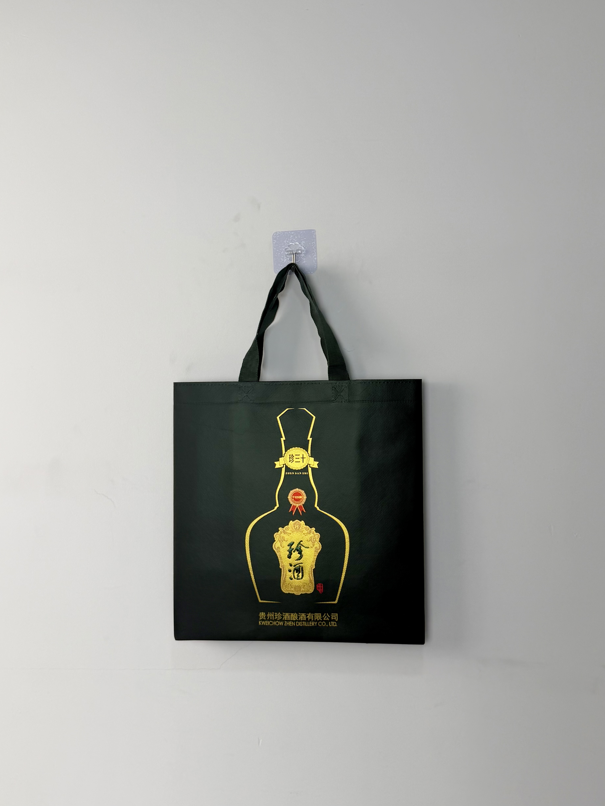

An opulent black-and-gold gift bag for Kweichow Zhen Jiu's premium Zhen Thirty Baijiu, featuring a gold-foil bottle silhouette and calligraphic brand mark that commands respect in China's most prestigious spirits category.

Kweichow Zhen Jiu is one of China's most respected Baijiu distilleries, located in the same Guizhou province region that produces Moutai — the world's most valuable spirits brand. The "Zhen Thirty" (珍三十) expression represents the distillery's ultra-premium tier, aged for three decades and priced accordingly. In Chinese business culture, gifting Zhen Thirty signals the highest level of respect and relationship investment. The bag that carries this bottle must match its prestige.
A bottle of Zhen Thirty costs more than many people's monthly salary. The bag cannot look like an afterthought — it must feel like part of the gift.
The gift bag project emerged from Zhen Jiu's push to elevate its packaging presentation to match the quality of the liquid inside. Previous gift bags had used standard red-and-gold designs common across the Baijiu category. The new black-and-gold approach was a deliberate departure — positioning Zhen Thirty as contemporary luxury rather than traditional heritage.
The design language draws from contemporary luxury fashion and art-gallery aesthetics rather than conventional Baijiu packaging. The deep black field creates gallery-like negative space around the gold bottle silhouette, while the calligraphic brand mark honors traditional Chinese artistry. The "Zhen Thirty" ribbon badge and red seal medallion add ceremonial detail without cluttering the composition.
Elegant gold line-art captures the distinctive Zhen Thirty bottle shape without photographic literalism.
"珍酒" in traditional brush script communicates heritage and artisanal authenticity.
"珍三十" banner signals the ultra-premium expression and justifies the investment-level price.
Deep black field associated with contemporary luxury — a deliberate departure from traditional Baijiu red.
Ultra-premium Baijiu gift bags demand construction quality that matches the product's price positioning. The specification prioritizes material weight, foil brilliance, and load-bearing confidence — all attributes that signal "worthy of Zhen Thirty."
| Parameter | Specification | Test Standard |
|---|---|---|
| Load Capacity | 6 kg | ASTM D5265 |
| Foil Adhesion | > 300 cycles | ASTM D5264 |
| Rivet Pull Strength | > 80 N | Internal Protocol |
| Color Fastness | Grade 4-5 | ISO 105-B02 |
Ultra-premium gift packaging requires multi-process finishing with exacting quality standards. The six-stage workflow incorporated hot-foil stamping, precision assembly, and load-testing protocols.
120gsm non-woven PP with deep-black masterbatch. Color verified for maximum contrast with gold foil under all lighting conditions.
Metallic gold foil transferred at 150°C for bottle silhouette. Precision die ensuring clean line edges on matte black surface.
Separate die for "珍酒" calligraphy and "珍三十" ribbon badge. Registration aligned to bottle outline within ±0.3mm.
Contrasting red foil for seal medallion. Creates visual focal point and traditional Chinese ceremonial color reference.
20-micron matte BOPP protecting foil surfaces and enhancing black depth. Calendered for premium hand-feel.
Box gusset formed with heat-sealed base. Black handles attached with brass rivets. 150% rated load test. AQL 1.0 final inspection.
The gift bag was deployed across Zhen Jiu's premium distribution channels during the Mid-Autumn Festival and Spring Festival gifting seasons. Distribution focused on high-end liquor boutiques, department stores, and direct corporate gifting programs.
Key Insight: Corporate purchasers specifically praised the black-and-gold design as "modern and international" compared to traditional red Baijiu packaging. Several corporate procurement managers noted that the contemporary aesthetic made Zhen Thirty more appropriate for gifting to international business partners — an emerging market segment for Chinese luxury spirits.
The calligraphic brand mark proved particularly effective with older consumers who valued the traditional script as evidence of cultural authenticity. Younger buyers, meanwhile, appreciated the minimalist black aesthetic for its Instagram-worthy visual impact — demonstrating cross-generational appeal.
Three design decisions differentiate this Baijiu gift bag from traditional red-and-gold packaging. Each positions Zhen Thirty for contemporary luxury rather than heritage nostalgia.
While nearly all premium Baijiu uses red and gold, Zhen Jiu's black field immediately differentiates the brand. Black reads as art-gallery minimalism and contemporary luxury — associations that attract younger, internationally minded consumers who might find traditional red packaging dated.
The gold line-art bottle creates anticipation without revealing too much. Recipients can immediately identify the product shape while maintaining the surprise of unboxing. This silhouette approach is more elegant than photographic product shots and feels more like art than advertising.
Zhen Thirty bottles are heavy, valuable, and fragile. The visible metal rivets serve dual purposes: they reinforce handle attachment for 6kg loads, and they signal structural confidence to users. A gift bag that fails while carrying a bottle to a business dinner creates catastrophic social embarrassment — the rivets visually prevent that anxiety.
We manufacture luxury gift packaging for Baijiu, wine, and spirits brands. From contemporary minimalism to traditional heritage aesthetics, we deliver bags worthy of your finest bottles.